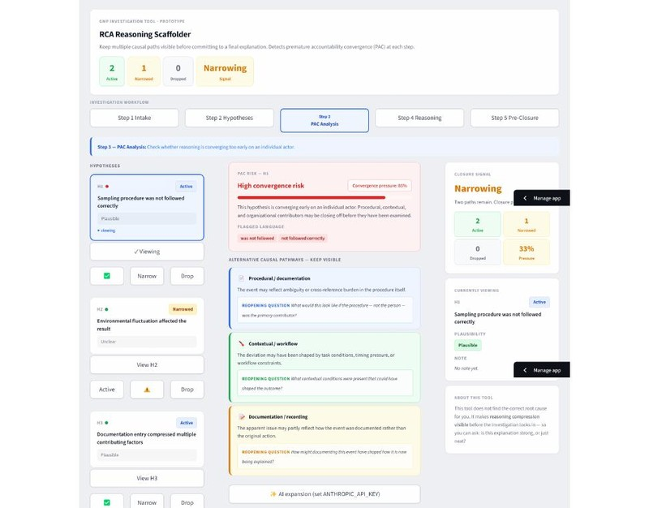
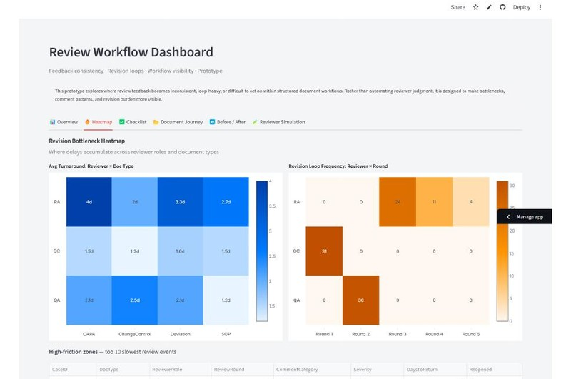
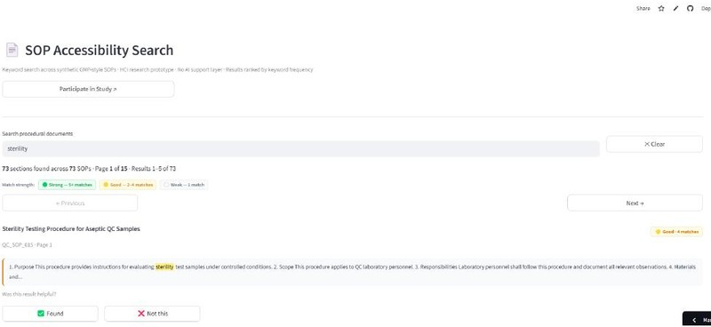

Tools
I build tools on two tracks. Research prototypes are evaluated in user studies and published as HCI papers. Production systems operate at a GMP-regulated pharmaceutical manufacturing site as unvalidated productivity layers. For four of my HCI papers, both exist: a deployed production tool grounding the research, and a synthetic-data prototype that made the user study externally evaluable.
Part 1 — Research-Linked Systems
Four-Layer Framework · Deployed + Studied
Each tool below exists in two forms: a production system deployed at the GMP site, and a research prototype built on synthetic data and evaluated in an N=20 user study. The research prototypes let me make claims about the design principles externally evaluable without exposing proprietary content. All four are published as standalone HCI papers.



Part 2 — Internal Productivity Tools
Operational Systems · No User Study
Four additional tools built for internal efficiency at the GMP site. These were developed without a research design or user study — the goal was operational utility, not external evaluation. Included here because they are part of the four-year deployment record and contribute to the embedded practitioner-researcher profile.